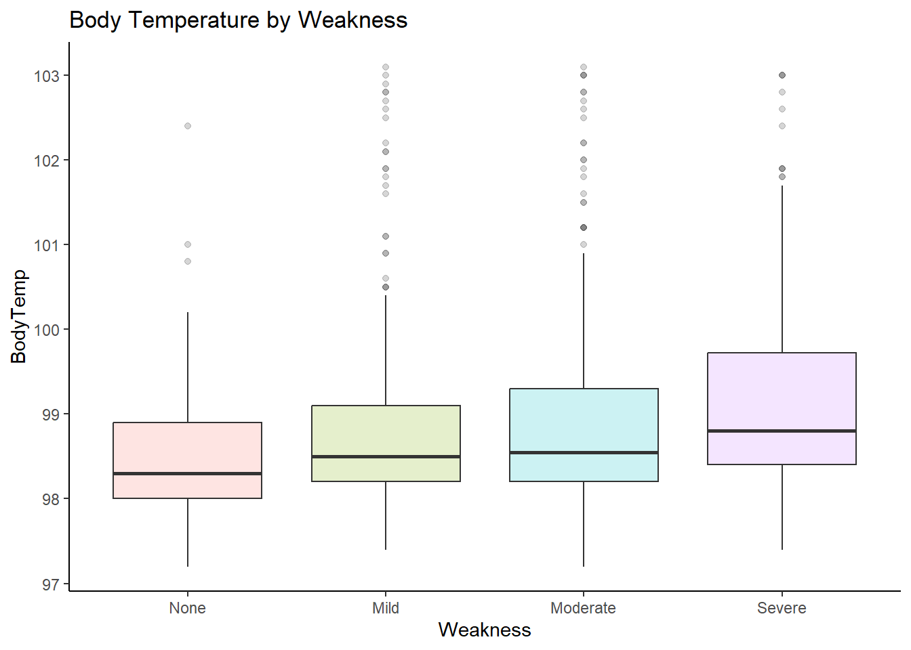
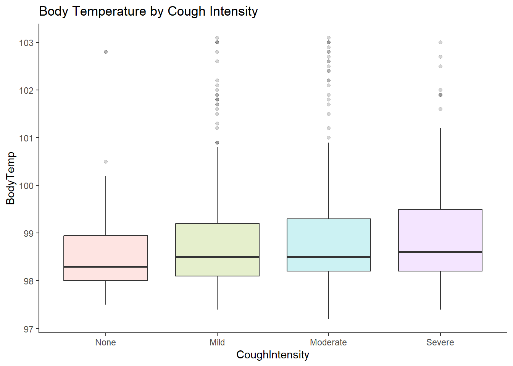
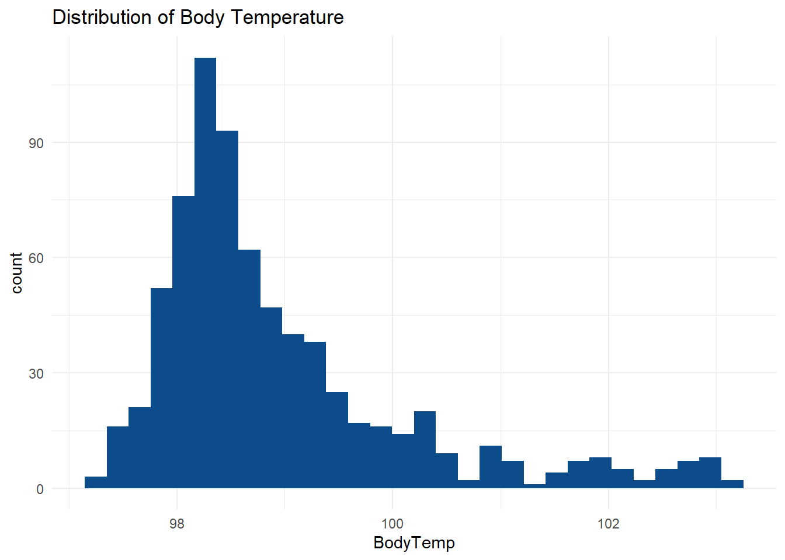
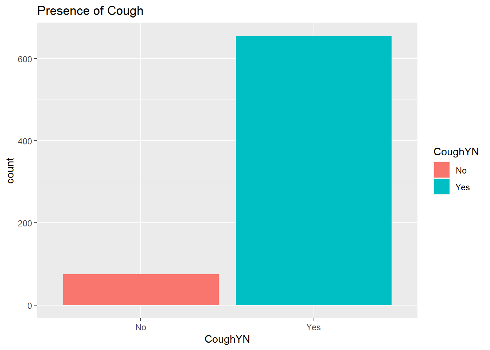
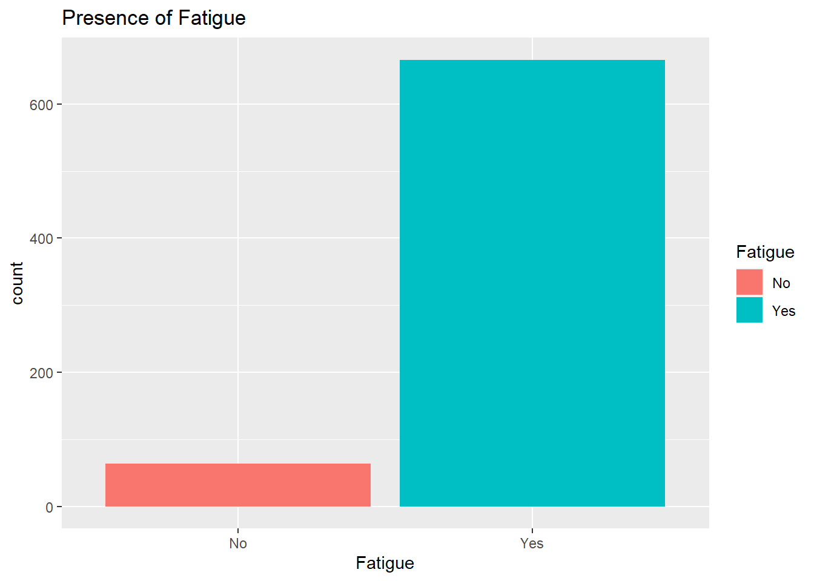
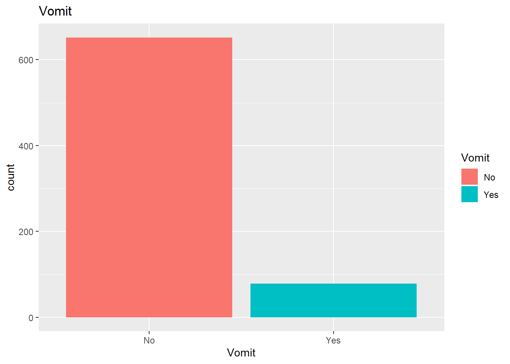
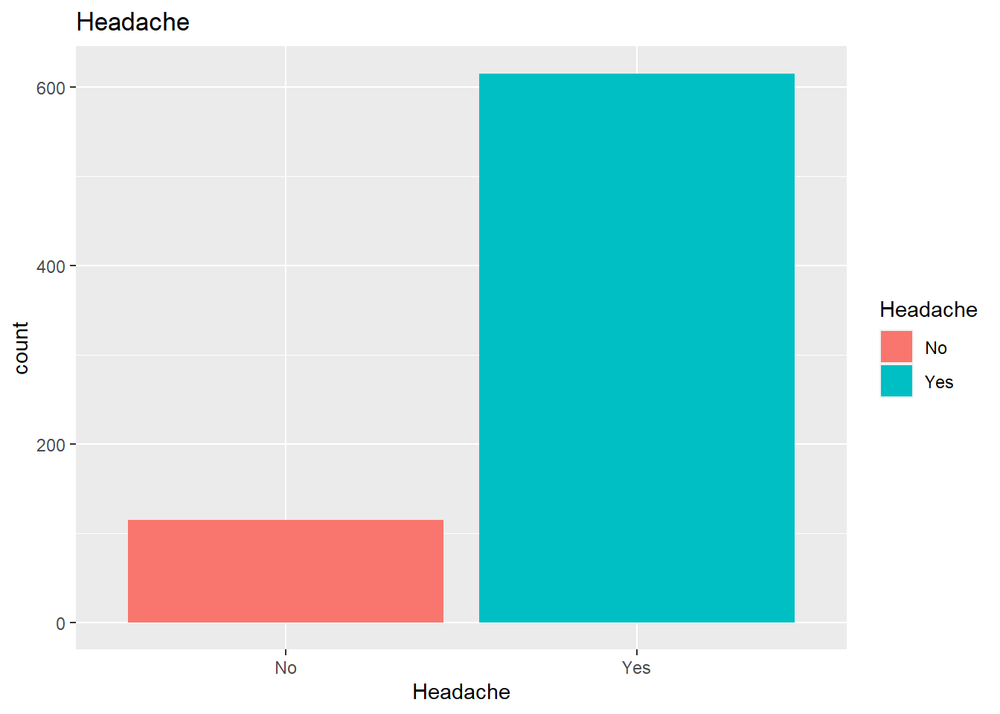

SwollenLymphNodes ChestCongestion ChillsSweats NasalCongestion CoughYN
No :418 No :323 No :130 No :167 No : 75
Yes:312 Yes:407 Yes:600 Yes:563 Yes:655
Sneeze Fatigue SubjectiveFever Headache Weakness WeaknessYN
No :339 No : 64 No :230 No :115 None : 49 No : 49
Yes:391 Yes:666 Yes:500 Yes:615 Mild :223 Yes:681
Moderate:338
Severe :120
CoughIntensity CoughYN2 Myalgia MyalgiaYN RunnyNose AbPain
None : 47 No : 47 None : 79 No : 79 No :211 No :639
Mild :154 Yes:683 Mild :213 Yes:651 Yes:519 Yes: 91
Moderate:357 Moderate:325
Severe :172 Severe :113
ChestPain Diarrhea EyePn Insomnia ItchyEye Nausea EarPn
No :497 No :631 No :617 No :315 No :551 No :475 No :568
Yes:233 Yes: 99 Yes:113 Yes:415 Yes:179 Yes:255 Yes:162
Hearing Pharyngitis Breathless ToothPn Vision Vomit Wheeze
No :700 No :119 No :436 No :565 No :711 No :652 No :510
Yes: 30 Yes:611 Yes:294 Yes:165 Yes: 19 Yes: 78 Yes:220
BodyTemp
Min. : 97.20
1st Qu.: 98.20
Median : 98.50
Mean : 98.94
3rd Qu.: 99.30
Max. :103.10
Summary tables for select categorical variables
Clean %>%group_by(Nausea,Vomit)%>%tally()%>%gt()%>%tab_header(title=("Summary Table: Nausea and Vomit"))
Summary Table: Nausea and Vomit
Vomit
n
No
No
461
Yes
14
Yes
No
191
Yes
64
Clean %>%group_by(Nausea,Diarrhea)%>%tally()%>%gt()%>%tab_header(title=("Summary Table: Nausea and Diarrhea "))
Summary Table: Nausea and Diarrhea
Diarrhea
n
No
No
435
Yes
40
Yes
No
196
Yes
59
Clean %>%group_by(Nausea,Weakness)%>%tally()%>%gt()%>%tab_header(title=("Summary Table: Nausea and Weakness "))
Summary Table: Nausea and Weakness
Weakness
n
No
None
39
Mild
172
Moderate
210
Severe
54
Yes
None
10
Mild
51
Moderate
128
Severe
66
Note: Very few people seem to have experienced Nausea with vomit and Nausea with Diarrhea; and Nausea with Weakness as symptom in this sample.
Mean temperature by group
Clean %>%group_by(CoughYN)%>%summarise_at(vars(BodyTemp), list(Temp=mean))%>%gt()%>%tab_header(title=("Mean Body Temp by Cough"))
Mean Body Temp by Cough
CoughYN
Temp
No
98.70800
Yes
98.96107
Clean %>%group_by(Fatigue)%>%summarise_at(vars(BodyTemp), list(Temp=mean))%>%gt()%>%tab_header(title=("Mean Body Temp by Fatigue"))
Mean Body Temp by Fatigue
Fatigue
Temp
No
98.58594
Yes
98.96862
Clean %>%group_by(SubjectiveFever)%>%summarise_at(vars(BodyTemp), list(Temp=mean)) %>%gt()%>%tab_header(title=("Mean Body Temp and Subjective Fever"))
Mean Body Temp and Subjective Fever
SubjectiveFever
Temp
No
98.57391
Yes
99.10120
Clean %>%group_by(Headache)%>%summarise_at(vars(BodyTemp), list(Temp=mean))%>%gt()%>%tab_header(title=("Mean Body Temp by Headache"))
Mean Body Temp by Headache
Headache
Temp
No
98.85304
Yes
98.95041
Clean %>%group_by(Weakness)%>%summarise_at(vars(BodyTemp), list(Temp=mean))%>%gt()%>%tab_header(title=("Mean Body Temp by Weakness"))
Mean Body Temp by Weakness
Weakness
Temp
None
98.60816
Mild
98.86457
Moderate
98.92515
Severe
99.22750
Clean %>%group_by(Vomit)%>%summarise_at(vars(BodyTemp), list(Temp=mean))%>%gt()%>%tab_header(title=("Mean Body Temp by presence or abscence of vomit"))
Mean Body Temp by presence or abscence of vomit
Vomit
Temp
No
98.90613
Yes
99.17692
Clean %>%group_by(Diarrhea)%>%summarise_at(vars(BodyTemp), list(name=mean))%>%gt()%>%tab_header(title=("Mean Body Temp by presence of Diarrhea"))
Mean Body Temp by presence of Diarrhea
Diarrhea
name
No
98.94960
Yes
98.84242
Notes: The mean temperature of people who have cough, have fatigue, had slightly higher temperature. Those who had subjective fever also had higher body temperature. There were that much difference in body temperature of those with or without headache, as well as those with or without diarrhea. As the weakness level increases, so does the mean body temperature.
Box plot to see the mean body temperature across various weakness levels.
ggplot(Clean, aes(Weakness, BodyTemp))+labs(x="Weakness", y ="BodyTemp")+ggtitle("Body Temperature by Weakness")+geom_boxplot(aes(fill=Weakness), size=0.5, alpha =0.2)+theme_classic()+theme(legend.position ="none")

Box plot to see the mean body temperature by cough intensity level.
ggplot(Clean, aes(CoughIntensity, BodyTemp))+labs(x="CoughIntensity", y ="BodyTemp")+ggtitle("Body Temperature by Cough Intensity")+geom_boxplot(aes(fill=CoughIntensity), size=0.5, alpha =0.2)+theme_classic()+theme(legend.position ="none")

Note: A visualization of the mean body temperature increasing as weakness level increases from none to mild weakness, to moderate weakness, to severe weakness. Similarly, as cough intensity increases so does the body temperature.
Distribution of body temperature
ggplot(Clean)+aes(x=BodyTemp)+geom_histogram(bins=30L,fill="#0c4c8a")+ggtitle("Distribution of Body Temperature")+theme_minimal()

#The distribution of body temperature seems slightly skewed to the right which means most peoples body temperature falls to the left of the histogram
Warning: The dot-dot notation (`..count..`) was deprecated in ggplot2 3.4.0.
ℹ Please use `after_stat(count)` instead.


Note: Almost all people experienced cough and fatigue and headache.


Note: Almost all did not experience vomiting, Diarrhea